Pinterest · Product Design
Creator
Academy
Context
Learning built for creators
The scope was to design an e-learning platform from scratch for Pinterest creators, in order to increase engagement and adoption of new features. The challenge was to create a friendly, engaging and consistent experience for the 3 learning modules, also using gamification techniques.
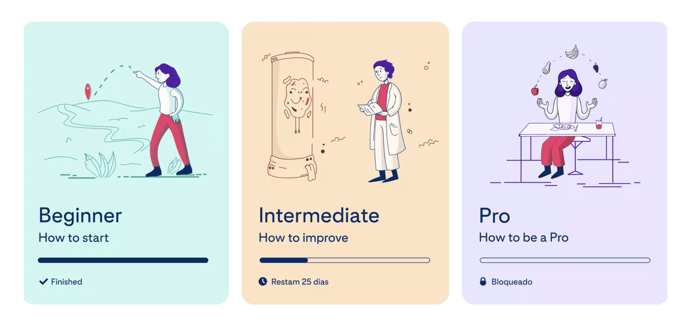
Sitemap
Structuring the journey
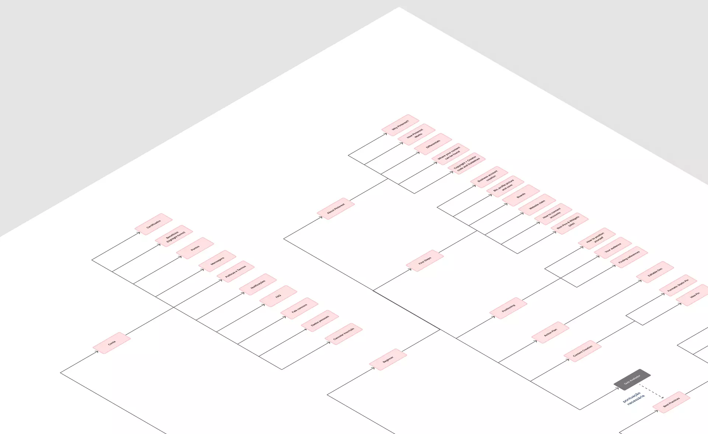
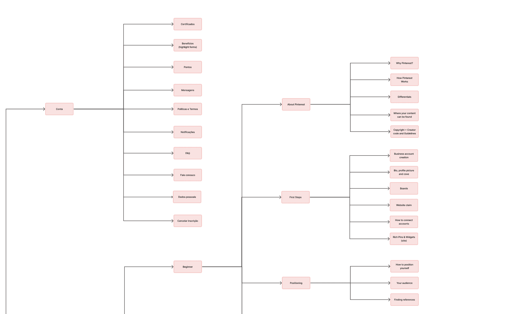
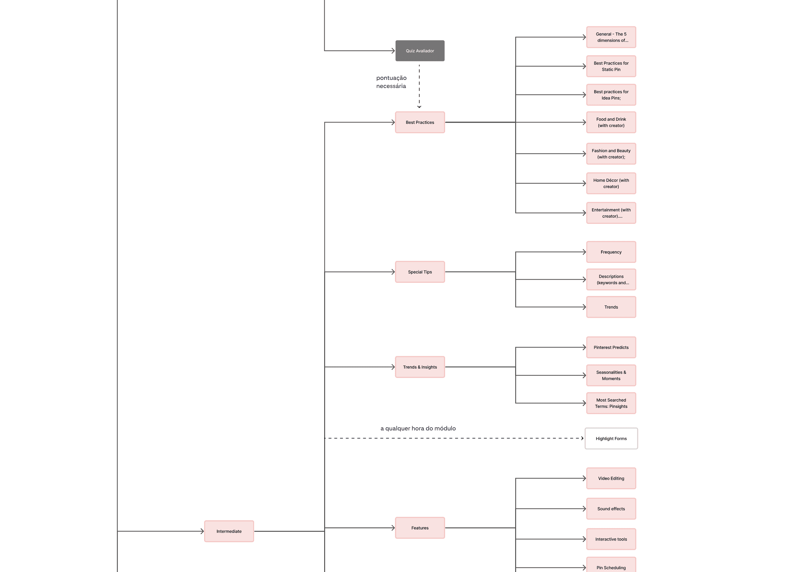
User flow and wireframes
From flow to screen
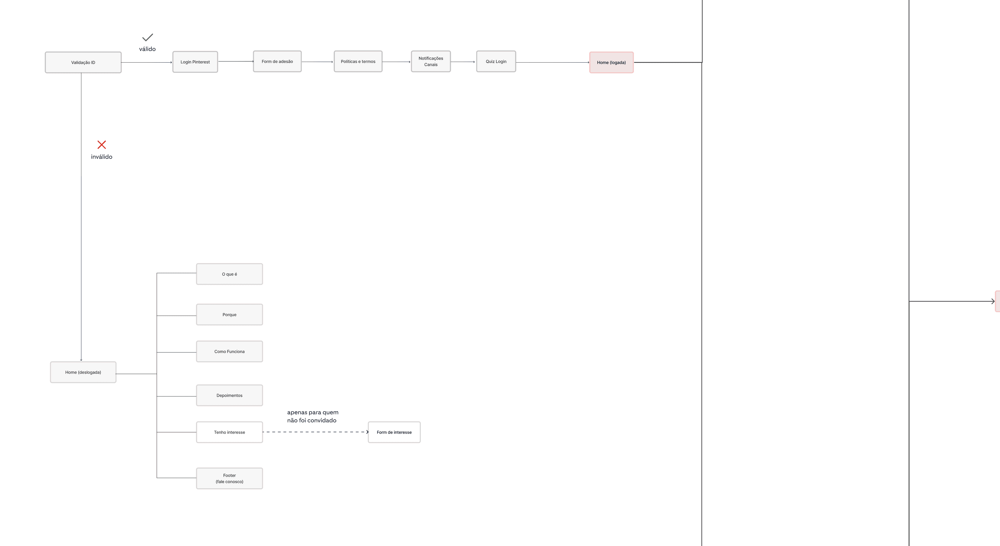
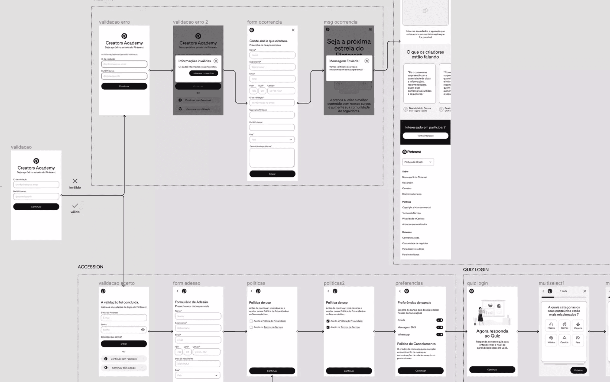
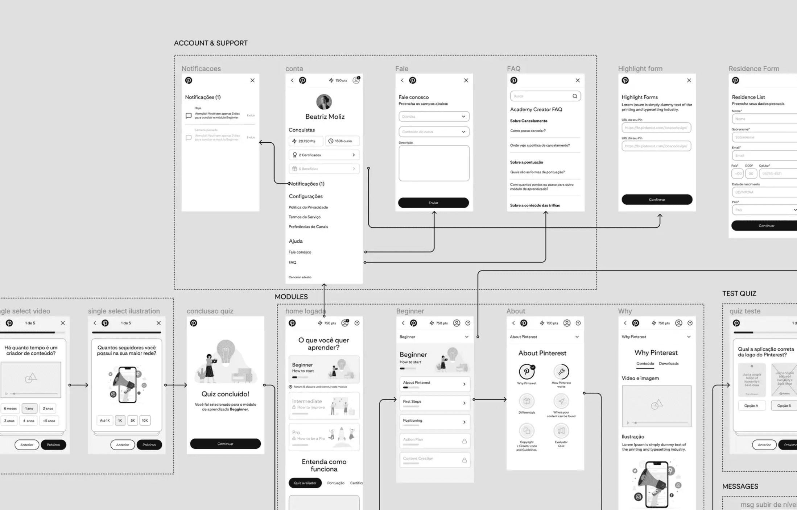
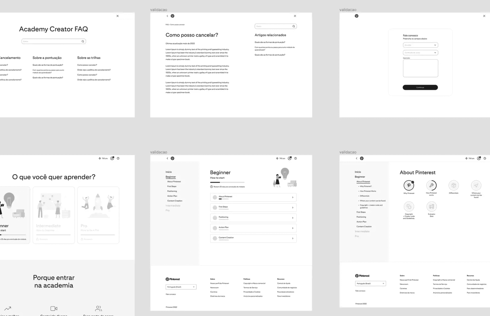
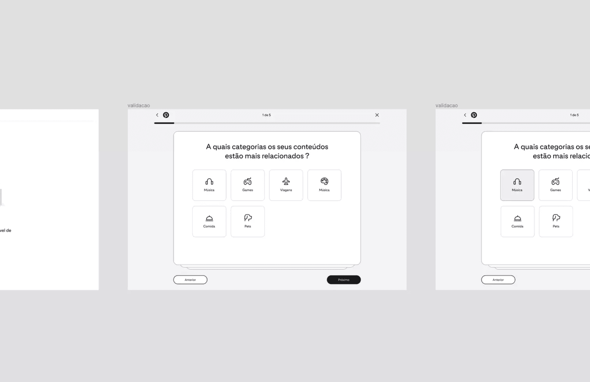
UI Presentation
The final experience
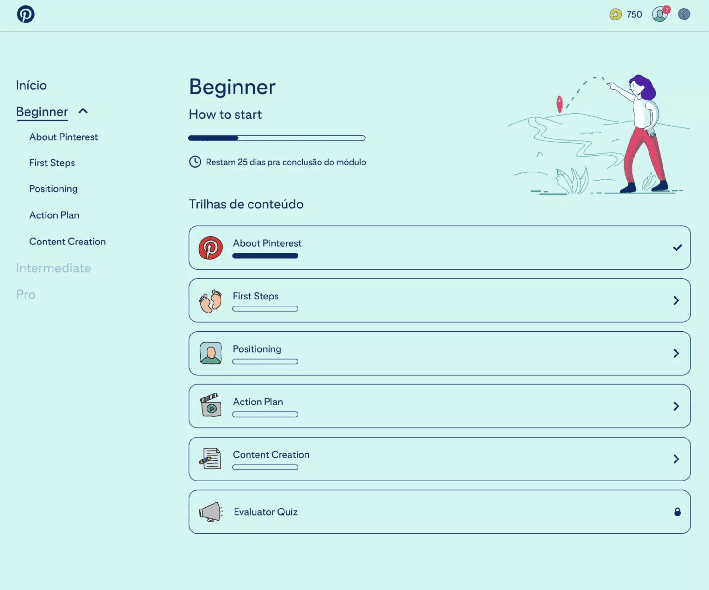
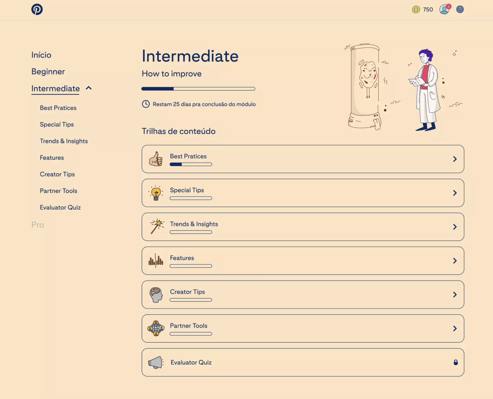
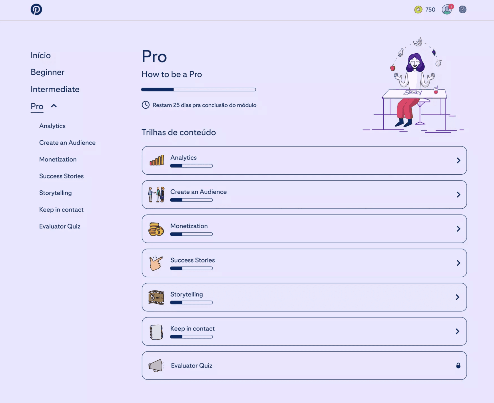
Want to see more?